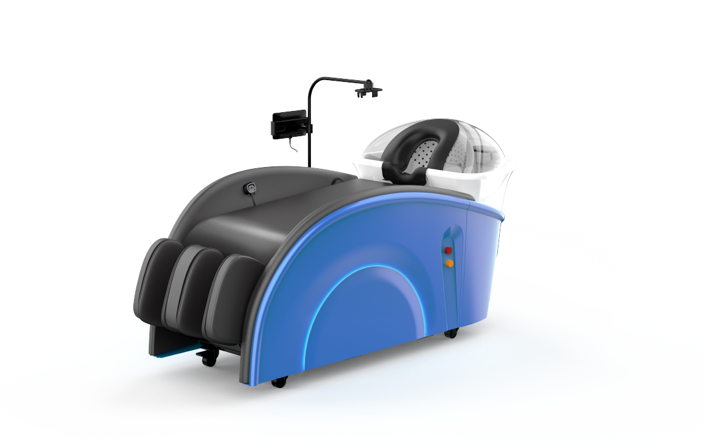

Intelligent water flow pressurization impacts the scalp and hair follicles, enhancing the deep absorption of herbal nutrients and multiplying their effects.
It automatically infuses polypeptide essence and traditional Chinese medicine extracts without manual intervention; it can directly reach the scalp and hair roots.
This freshly brewed herbal shampoo is delivered to the scalp via spray, nourishing and protecting hair follicles and further enhancing its conditioning effects.
Enhances the body's regulatory functions, strengthens hair regeneration, awakens the body's regulatory system, accelerates the elimination of impurities, and combats aging.
ntelligent simulation of real human shampooing techniques and pressure for deeper and more thorough cleaning without residue.
Comfort from head to toe